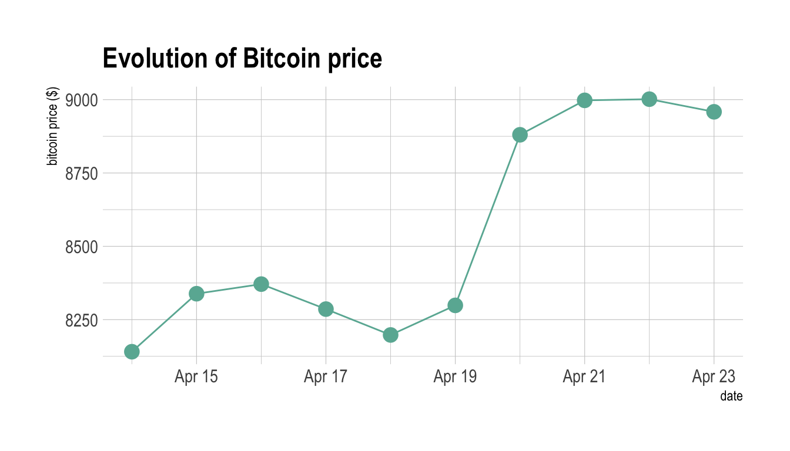
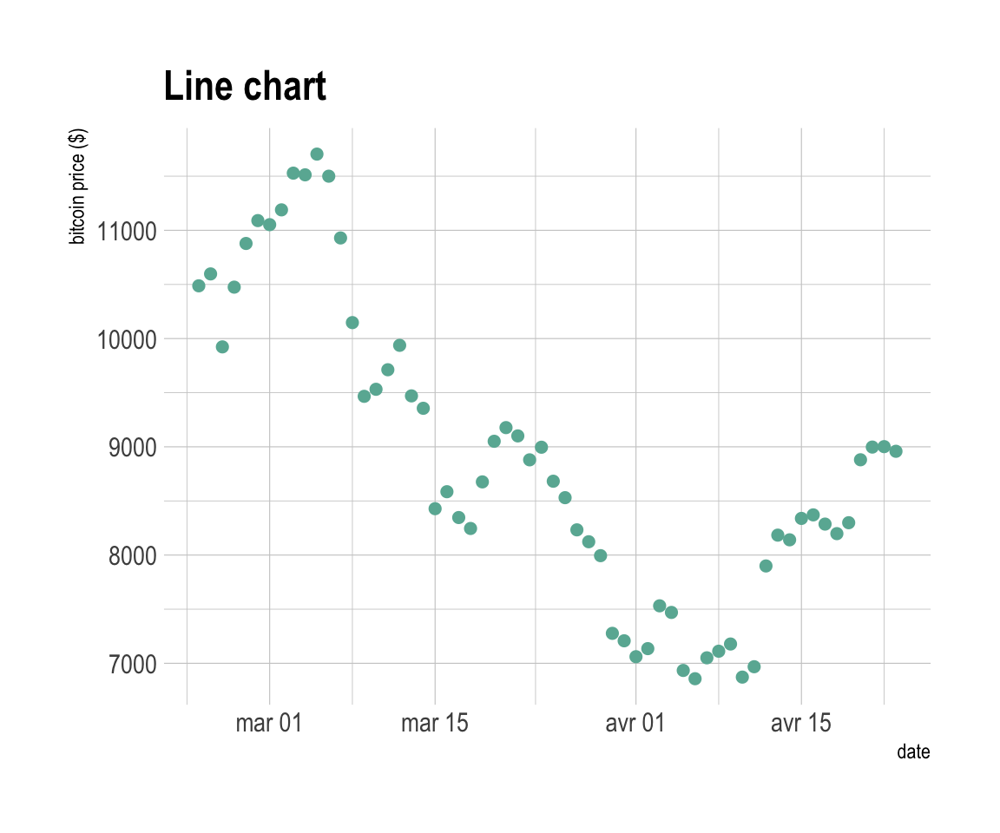
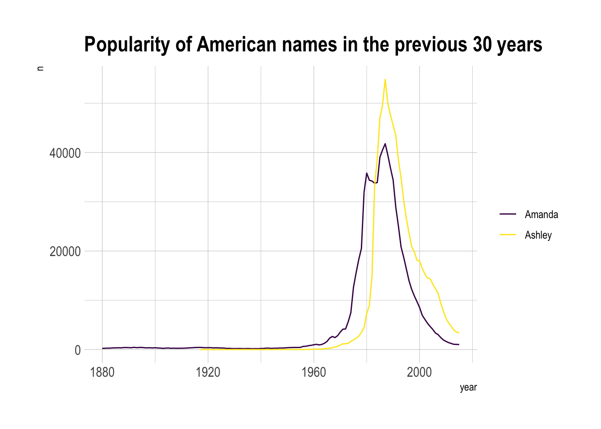
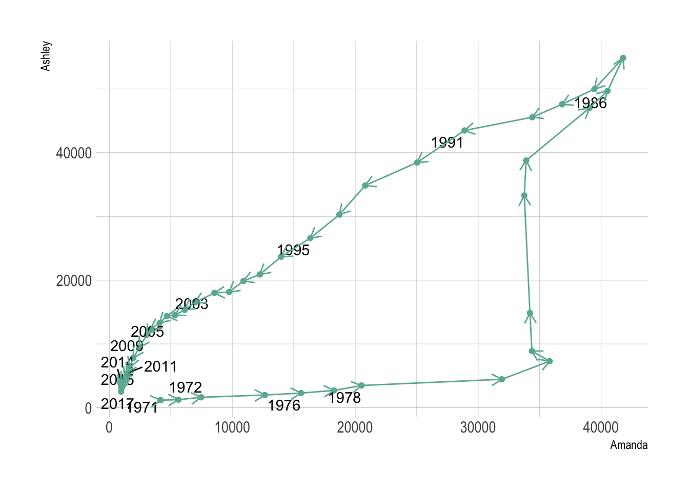
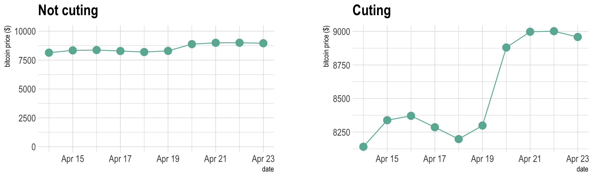

Connected Scatterplot
definition - mistake - related - code
A connected scatterplot displays the evolution of a
numeric variable. Data points are represented by a dot and connected by
straight line segments. It often shows a trend in data over intervals of
time: a time series. Basically it is the same as a line plot in most
of the cases, except that individual observation are highlighted.
The following example shows the evolution of the bitcoin price in April 2018. Data comes from the CoinMarketCap website.
# Libraries
library(tidyverse)
library(hrbrthemes)
library(plotly)
library(patchwork)
library(babynames)
library(viridis)
# Load dataset from github
data <- read.table("https://raw.githubusercontent.com/holtzy/data_to_viz/master/Example_dataset/3_TwoNumOrdered.csv", header=T)
data$date <- as.Date(data$date)
# Plot
data %>%
tail(10) %>%
ggplot( aes(x=date, y=value)) +
geom_line(color="#69b3a2") +
geom_point(color="#69b3a2", size=4) +
ggtitle("Evolution of Bitcoin price") +
ylab("bitcoin price ($)") +
theme_ipsum()
Note: You can read more about this project here.
Connected scatterplot makes sense in specific conditions where both the scatterplot and the line chart are not enough:
# Plot
p1 <- data %>%
tail(60) %>%
ggplot( aes(x=date, y=value)) +
geom_line(color="#69b3a2") +
ggtitle("Line chart") +
ylab("bitcoin price ($)") +
theme_ipsum()
p2 <- data %>%
tail(60) %>%
ggplot( aes(x=date, y=value)) +
geom_line(color="#69b3a2") +
geom_point(color="#69b3a2", size=2) +
ggtitle("Connected scatterplot") +
ylab("bitcoin price ($)") +
theme_ipsum()
p1 + p2
# Plot
data %>%
tail(60) %>%
ggplot( aes(x=date, y=value)) +
geom_point(color="#69b3a2", size=2) +
ggtitle("Line chart") +
ylab("bitcoin price ($)") +
theme_ipsum()
The connected scatterplot can also be a powerfull technique to tell a story about the evolution of 2 variables. Let’s consider a dataset composed of 3 columns:
We can first visualize the evolution of both names using a usual line plot with 2 lines:
library(babynames)
# Load dataset
data <- babynames %>%
filter(name %in% c("Ashley", "Amanda")) %>%
filter(sex=="F")
#plot
data %>%
ggplot( aes(x=year, y=n, group=name, color=name)) +
geom_line() +
scale_color_viridis(discrete = TRUE, name="") +
theme(legend.position="none") +
ggtitle("Popularity of American names in the previous 30 years") +
theme_ipsum()
This is an accurate way to visualize the information. However, it would be much harder to build it if both variables would not share the same unit. In this case, it would require a dual axis line chart that is known to be very misleading.
The connected scatterplot can be a good workaround in this situation:
library(grid) # needed for arrow function
library(ggrepel)
# data
tmp <- data %>%
filter(year>1970) %>%
select(year, name, n) %>%
spread(key = name, value=n, -1)
# data for date
tmp_date <- tmp %>% sample_frac(0.3)
tmp%>%
ggplot(aes(x=Amanda, y=Ashley, label=year)) +
geom_point(color="#69b3a2") +
geom_text_repel(data=tmp_date) +
geom_segment(color="#69b3a2",
aes(
xend=c(tail(Amanda, n=-1), NA),
yend=c(tail(Ashley, n=-1), NA)
),
arrow=arrow(length=unit(0.3,"cm"))
) +
theme_ipsum()
Here the history of both names is obvious. They were not popular at all in 1972 at the beginning of the dataset. Between 1972 and 1980 Amanda got super popular but Ashley was still not common at all. Then a second period between 1980 is caracterized by the expansion of Ashley, Amanda remaining popular. Both names then decreased in popularity until 2014.
Warning: Readers usually expect time to flow from left-to-right. Here it flowed in both directions, what could mislead your audience. Here are a few advice:
Going further:
The connected scatterplot is subject to the same caveats than the line chart:
data <- read.table("https://raw.githubusercontent.com/holtzy/data_to_viz/master/Example_dataset/3_TwoNumOrdered.csv", header=T)
data$date <- as.Date(data$date)
p1 <- data %>%
tail(10) %>%
ggplot( aes(x=date, y=value)) +
geom_line(color="#69b3a2") +
geom_point(color="#69b3a2", size=4) +
ggtitle("Not cuting") +
ylab("bitcoin price ($)") +
theme_ipsum() +
ylim(0,10000)
p2 <- data %>%
tail(10) %>%
ggplot( aes(x=date, y=value)) +
geom_line(color="#69b3a2") +
geom_point(color="#69b3a2", size=4) +
ggtitle("Cuting") +
ylab("bitcoin price ($)") +
theme_ipsum()
p1 + p2
Data To Viz is a comprehensive classification of chart types organized by data input format. Get a high-resolution version of our decision tree delivered to your inbox now!

A work by Yan Holtz for data-to-viz.com